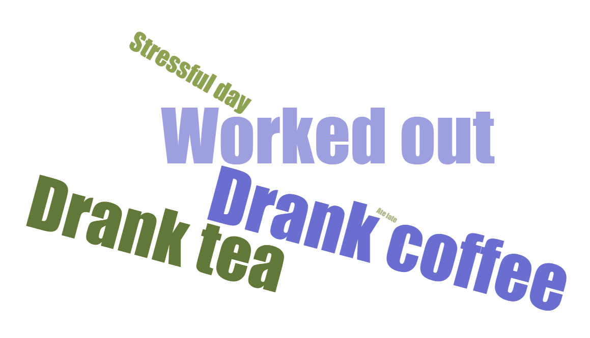
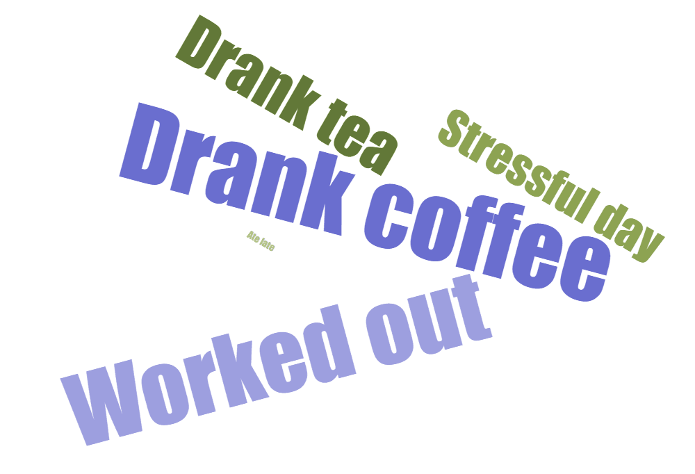

生活在英国Nelson的Dana Diotte是一位地球数学专家，同时也是一位网页开发者。2014年起，他开始使用iOS系统上的Sleep Cycle软件收集自己的睡眠数据。这一软件通过自行采集及使用者手动输入的方式，记录了入睡时间、起床时间、睡眠质量、睡眠时间、起床心情、睡前行为、心率等八类数据。
Dana的这一记录习惯一直保持到2018年，最终有间断地收集了八百余条睡眠数据。
我们可以看出K在2016年8，9，10月的睡眠质量明显偏低，为了对照试验，我们选取了在此之前的睡眠质量较好的2016年5，6，7月进行对照分析
以日历形式呈现Dana近五年的睡眠状况，如下图所示。图中每个小方格表示一天，通过颜色可直观看出睡眠软件监测出的Dana当天睡眠质量（从优到劣，由绿色向粉色过渡）。鼠标停留在每个方格上可显示当天的详细数据。 此外，在记录最初的一年多时间内，Dana还记录了自己的起床心情（Wake up）。这项数据以笑脸、平脸和哭脸的形式呈现在记录的表格上。
观察这一记录日历，我们可直观地看出2016年8，9，10三个月小方格的颜色都较浅，甚至出现了若干粉色块，即Dana的睡眠质量在这三个月中普遍偏低。让我们不免疑心他的生活在这数月中出现了一些变故。
而在这三个浅色月份之前的2016年5，6，7月呈现出颜色较深的绿色，体现了整体较高的睡眠质量，与之形成了鲜明的对比。
为了探索影响睡眠质量的因素，我们截取这两段时间进行对比分析。
深蓝色条是结束时间相对于前天晚上八点的值，蓝色条是入眠时间相对于前天晚上八点的值 横轴坐标则是代表是第几天）在睡眠质量较低的8，9，10三个月，Dana惯常在十一点前入睡，六点半左右起床，睡眠时间平均是7.86个小时
而在睡眠质量相对较高的5，6，7三个月，Dana惯常在十一点半之前睡觉，睡眠时间大约是7.71个小时。
在第一个时间段她惯常在xx点入睡，xx点起床，她的睡眠时间平均是
可以看出入睡时间上相比，质量低的时间段睡眠平均时长反而比质量高的时间段多，但是再比较它们的入睡时间的规律性，8-10月明显比5-6月睡眠要更加规律， 通过以上的对比分析，可以看出固定入睡时间可提高睡眠质量。
在第二个时间段她惯常在xx点xxx
|
男性 |
女性 |
|
身体原因 |
身体原因 |
在这份统计数据中，有20%的男性认为心情入睡时间的变化会影响心情，而38%的男性认为入睡时间的变化会影响身体。这种情况在女性身上更为严重：她们中的入睡时间的变化会影响心情；47%认为入睡时间的变化会影响身体。
我们继续关心这数个月的睡前生活记录，发现
 7-8月相比5-7月，由于他几乎每天都要喝咖啡，所以我们能观察到worked OUT词组以drink coffee为参照物，出现的概率明显增加，沉重的工作压力也会影响睡眠的质量
让我们再来关注一下Dana2014年到2018年的睡眠时间，即Time in bed。参差不齐的竖条按时间顺序排列，长度对应时间时间，鼠标移上可看到详细数值。
点击查看睡眠时间可以看出（看出什么分析一下，比如普遍集中在哪个范围内）
从美国四个地理分区的平均睡眠时间情况
而虽然日均睡眠时间超过7小时，依然有56%的互联网网民表示自己有睡眠问题。K也是其中的一个代表。
虽然从Dana记录的数据中我们无从得知在睡眠质量不佳、睡眠时间较短的日子里，他有无采取药物手段辅助睡眠。但睡眠障碍已确确实实成为困扰现代人的一大心病。数据显示，在2012年，服用辅助药物助眠的丹麦人数量达到了3.64%,这一数据虽然随着时间呈缓慢下降趋势，但是依然保持在3%左右。睡眠，一场无声无息的战争，悄声在不少人的夜晚拉响了警报。
我们感谢Dana对自己睡眠数据的无私分享——数据无声，却能悄悄讲述睡眠的故事。